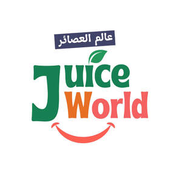

Trade Mark Journal No.2025/027 4 July 2025
UK00004216706 10 June 2025 (29,31,32)

- Class 29
- Dried fruit; Fruit snacks; Fruit salads; Sliced fruit; Fruit peel.
- Class 31
- Fresh fruit; Fresh kiwi fruit; Fresh passion fruit; Fresh fruits and vegetables; Fresh apple mangos; Watermelon, fresh; Fresh berries; Fresh strawberry guavas; Grapes, fresh; Fresh grapes; Fresh bananas; Mixed fruits [fresh]; Tropical fruits [fresh]; Fresh mangos; Fresh dragon fruits; Fresh grape tomatoes; Fresh pineapple guavas (feijoa); Oranges, fresh; Fresh oranges; Strawberries [fresh]; Fresh apples; Fresh lychees; Tangerines [fresh]; Fresh tangerines; Fresh grapefruits; Fresh lemons; Fresh apricots; Fresh blueberries; Fresh plums; Fresh fruits, nuts, vegetables and herbs; Fresh papayas; Fresh peaches; Fresh raspberries; Fresh mangosteens; Fresh pineapples; Rhubarb, fresh.
- Class 32
- Fruit juice; Fruit juices; Fruit juice beverages; Mixed fruit juice; Concentrated fruit juice; Fruit juice bases; Mango juice; Mixed fruit juices; Guava juice; Fruit juice beverages (Non-alcoholic -); Pomegranate juice; Fruit smoothies; Pineapple juice beverages; Apple juice beverages; Smoothies [fruit beverages, fruit predominating]; Grape juice; Melon juice; Fruit flavored drinks; Fruit drinks; Beverages consisting of a blend of fruit and vegetable juices; Orange juice drinks; Frozen fruit drinks; Coconut juice; Orange juice; Fruit flavoured drinks.
Juiceworld UK Ltd